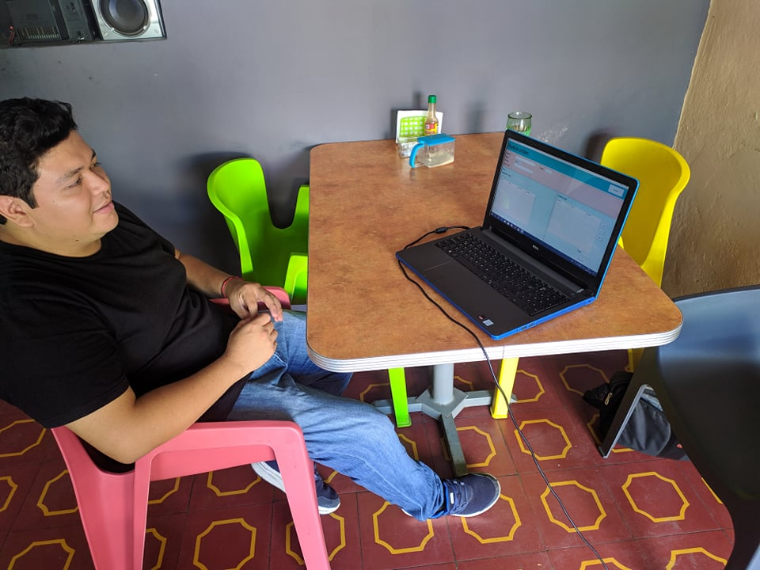
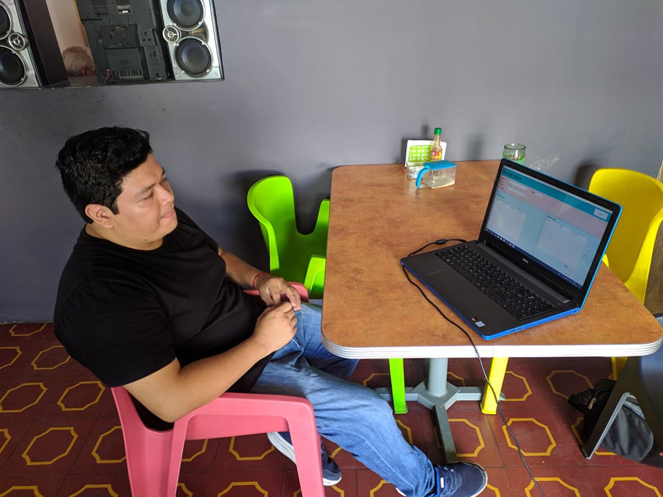
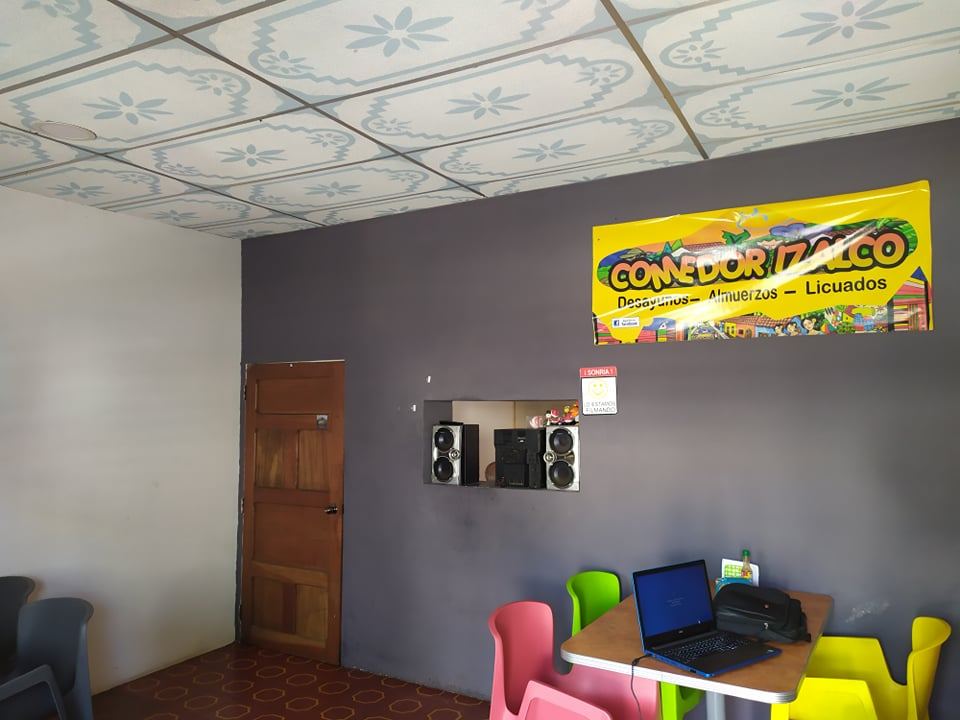

Instalacion
El sistema POS puede ser instalado por cualquier persona que desee usarlo.
Para la instalación del sistema POS es necesario contar con el JDK de Java 8 instalado, Mysql y
un gestor de base de datos. Teniendo todo lo necesario, usarlo es tan sencillo como abrir el programa y utilizarlo.
Al ser una aplicacion de escritorio escrita en java, puede usarlo en linux, windows y macOs.
Para proceder a la instalación deben seguirse los siguientes pasos:
INSTALACION EN EQUIPO CON WINDOWS
1. Es necesario contar con Java instalado, de no tenerlo desacargarlo de la pagina oficial, e instalarlo en su equipo:
Java SE Development Kit 8
2. Instalar MySQL, descargalo de la pagina oficial e instalarlo.
MySQL
3. Para manejar la base de datos por comodida se recomienda MySQL Workbench
MySQL Workbench
4. Ejecutar el script de la base de datos en mysql Workbench
Script de la base de datos
5. Descargar el archivo comprimiedo .zip del sistema y solo quedaria ejecutar el programa SistemaPOS_2.jar
SistemaPOS
-
GitHub
-
Base de Datos
-
Java
Implementacion
como primer cliente del SistemaPOS, ha sido un pequeño restaurante que gracias a este sistema,
ahora le es posible llevar un registro de sus ventas, llevar un orden en las ordenes asi como se le
ha facilitado llevar el tiempo de entregas.



Configuracion de productos:
1. Estando en el Dashboard, seleccionamos en el menu lateral el boton de administracion:
.png)
2. En la ventana de administracion, seleccionamos productos y ahi podremos ver todos los productos, asi como agregar, modificar o eliminar
.png)
Crear nueva orden:
1. Estando en el Dashboard, seleccionamos en el menu lateral el boton de "Nueva orden":
.png)
2. En esta ventana abra que llenarlo con el nombre del cliente, luego se procede seleccionar los productos y por ultimo se envia su orden,
y que da en estado de preparacion.
.png)
Agregar productos a la orden:
1. Seleccionamos la orden a la cual se le va a agregar nuevos productos:
.png)
2. Nos mostrara la opcion para poder agregar nuevos productos:
.png)
3. Se actualizar la orden en el dashboard:
.png)
Cobrar orden:
1. Seleccionamos la orden a la cual se va a cobrar, seleccionamos en el menu cobrar:
.png)
2. Agregamos la cantidad de dinero que se recibe y se procede a realizar el cobro, cambiando el estado de la cuenta a cancelada:
.png)
Orden para llevar:
1. En el caso que la orden sea para llevar lo unico que cambiaria seria que no se podria selecionar mesa, y se le cobraria de una vez: